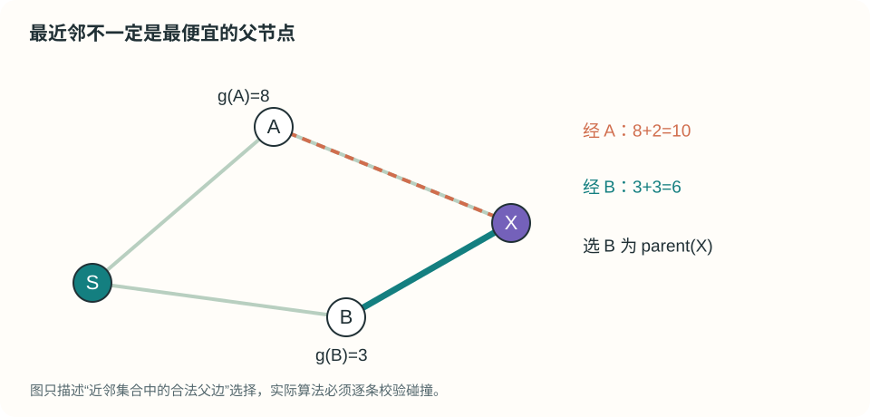
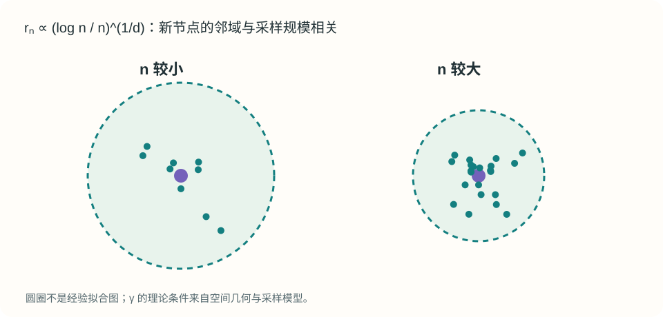
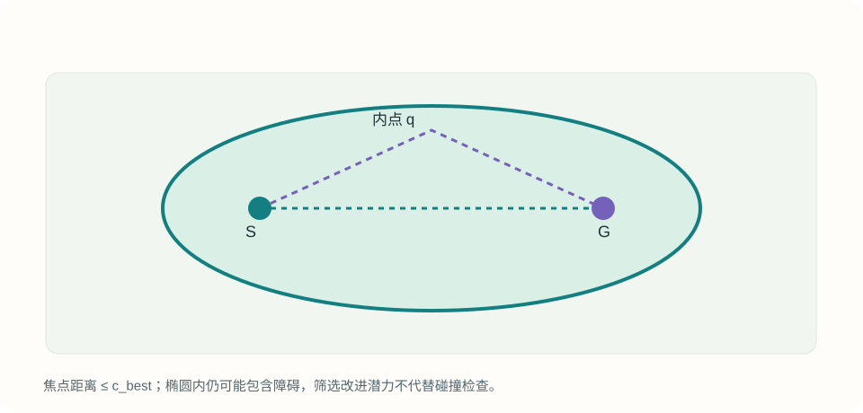

RRT*：树不仅会生长，还会重新接线
选择更便宜的父节点，重连旧顶点，再把成本变化传给整个后代；由此理解为何采样数的极限理论与有限预算下的真实路径质量不是一回事。
找到可行路线，不代表继续采样就能变好
标准 RRT 一旦发现树顶点，只给它一个固定父节点。后来在空间中遇到更短的局部通路时，旧树结构未必会改造；只增加随机样本，不自动等于持续优化当前路径。RRT* 修改了“添加新顶点”的连接机制，在新增节点附近比较多种合法父节点，并尝试让附近已有节点改挂到新节点下面。
Karaman 与 Frazzoli 的 2011 年论文给出了 RRT* / PRM* 的渐进最优性结果：在适用的几何运动规划、采样分布与连接范围等假设下，最优代价估计几乎必然趋于最优值。它不是说运行 100 或 1000 次就一定最优，也不是对任意运动学系统自动成立。
ASYMPTOTIC OPTIMALITY · 12

ChooseParent：为什么最近邻未必给出最低到达成本
假设候选新节点 x 离 A 更近，但从起点到 A 已经绕远；另一节点 B 略远，却来自一段非常便宜的主干。只选最近邻 A 产生的路径不一定成本最低。RRT* 把附近满足连接规则的节点组成集合 X_near，对每个合法连接计算：
其中 g(v) 是树上从根到 v 的当前累计成本，c(v,x) 是合法局部运动的成本。先检验连接是否无碰撞、是否满足动力学，再比较成本。不能只凭点间欧氏距离就替代约束系统的局部运动代价。
Rewire：新顶点也可能让旧路径更便宜
新节点 x 加到树后，再对附近已有节点 v 计算 g(x)+c(x,v)。如果这个成本更小，且 x→v 的运动合法，就把 v 的父节点从旧父亲换为 x。树中 v 的所有后代也因此得到成本下降，必须同步更新它们的累计 g；只改 v 而不改后代，是教学实现里非常常见的 bug。
ASYMPTOTIC OPTIMALITY · 12

在欧氏空间对称边代价的条件下，若只在新节点添加后再尝试重连旧节点，严格小于的改进通常不会构成环；但泛化到有向状态图和非对称局部规划器时，需要额外的祖先/可达性检查，不能未经证明沿用。
为什么附近节点数需要随采样规模变化
如果只连接固定 k 个最近邻或在一个随意固定半径内连接，未必满足 RRT* 的渐进最优性证明。二维欧氏构型空间里，一个经典的渐进连接半径形状是：
d 是空间维数；η 是局部可扩展长度上限；γ 不是任意调小仍有效的魔法数字，需要满足与自由空间测度、单位球体积以及原论文假设相关的下界要求。指数 1/d 表示维度越高近邻连接问题越困难。
ASYMPTOTIC OPTIMALITY · 12

Informed RRT*：有了一个可行解后再去哪里采样
对于目标是欧氏路径长度的二维几何规划，若当前最好解长度为 c_best，任一点 q 能参与改进的必要条件是 ||q−s||+||q−g|| < c_best。这定义了以 s 和 g 为焦点、长轴总长度为 c_best 的椭圆内部；在高维则是 prolate hyperspheroid。其边界外的任何经 q 的路径长度都不可能打败当前最好解。
Gammell 等人的 Informed RRT*（IROS 2014）利用这一几何可纳下界直接在可能改进解的子集采样，而不是每次都在全局采样后拒绝。若目标代价不是欧氏长度（如含风险、时延或曲率惩罚），不能照搬同一个椭圆作为严格的改进子集。
ASYMPTOTIC OPTIMALITY · 12

运行一个带成本传播的二维 RRT* 微型实现
为避免抽象伪代码隐藏重连问题，以下代码真实建立父节点与子节点集合，执行 ChooseParent、Rewire、更新整个后代子树成本，并在所有采样完成后尝试合法目标连接。Python 3.10+，固定种子；邻域常数 10 是方便演示的选参，未验证其满足特定论文的理论阈值。
from math import dist, inf, log, sqrt
from random import Random
def small_rrt_star(seed=7, trials=350):
"""二维点机器人演示，半径常数仅用于教学，不是理论阈值。"""
rng = Random(seed)
wall = (4., 2., 6., 8.)
def free(q):
x,y=q
return (0 <= x <= 10 and 0 <= y <= 10
and not (wall[0] <= x <= wall[2]
and wall[1] <= y <= wall[3]))
def valid_edge(a,b):
n=max(1,int(dist(a,b)/0.09)+1)
return all(free((a[0]+(b[0]-a[0])*i/n,
a[1]+(b[1]-a[1])*i/n))
for i in range(n+1))
def steer(a,b):
length=dist(a,b)
return a if length < 1e-9 else tuple(
x+min(.75/length,1.)*(y-x) for x,y in zip(a,b))
nodes=[(1.,5.)]
parent=[-1]
children=[set()]
g=[0.]
rewire_count=0
for _ in range(trials):
target=(10*rng.random(),10*rng.random())
nearest=min(range(len(nodes)),
key=lambda j:dist(nodes[j],target))
q=steer(nodes[nearest],target)
if dist(q,nodes[nearest]) < 1e-8:
continue
if not valid_edge(nodes[nearest],q):
continue
n=len(nodes)+1
radius=min(2.1,10*sqrt(log(n)/n)) # 教学选参
near=[i for i,p in enumerate(nodes)
if dist(p,q)<=radius]
if nearest not in near: near.append(nearest)
candidates=[(g[i]+dist(nodes[i],q),i) for i in near
if valid_edge(nodes[i],q)]
if not candidates: continue
best_cost, best_parent=min(candidates)
new=len(nodes)
nodes.append(q)
parent.append(best_parent)
children.append(set())
g.append(best_cost)
children[best_parent].add(new)
for i in near:
if i==best_parent: continue
alt=g[new]+dist(q,nodes[i])
if alt+1e-8<g[i] and valid_edge(q,nodes[i]):
old=parent[i]
children[old].remove(i)
parent[i]=new
children[new].add(i)
delta=alt-g[i]
stack=[i]
while stack:
k=stack.pop()
g[k]+=delta
stack.extend(children[k])
rewire_count+=1
goal=(9.,5.)
options=[(g[i]+dist(p,goal),i)
for i,p in enumerate(nodes) if valid_edge(p,goal)]
if not options: return inf, [], rewire_count
total,i=min(options)
path=[goal]
while i!=-1:
path.append(nodes[i])
i=parent[i]
return total, path[::-1], rewire_count
c100,p100,r100=small_rrt_star(trials=100)
c350,p350,r350=small_rrt_star(trials=350)
assert c100 < inf and c350 <= c100 + 1e-9
assert p350[0]==(1.,5.) and p350[-1]==(9.,5.)
assert r350 >= r100 > 0
print("fixed seed; improving incumbent:", round(c100,3),
"to",round(c350,3),"; rewires:",r350)断言关注同一随机序列下从 100 次尝试增加到 350 次后当前最佳路线成本不升高、起终点正确以及发生了重连；这一小例子不是渐进最优性证明。图中只针对二维点模型进行离散化碰撞测试，不涉及整车轮廓和连续安全认证。
“渐进”是无限采样极限，而不是能画漂亮曲线
| 说法 | 正确的限定 |
|---|---|
| RRT* 比 RRT 好 | 在适用假设下，RRT* 具有更强的渐进最优性结论；单次运行可能更慢 |
| 越采越优化 | 累计已知最好解可以单调不变/改善；不必每批都有提升 |
| Rewire 一定降低成本 | 只有合法且严格更低成本的边才接受；成本更新要传播 |
| Informed RRT* 用椭圆 | 是特定路径长度下界对应的几何结构；换代价要重推下界 |
| 高维方法通用 | 状态度量、steer、可行边连接与连续约束决定是否可用 |
真正的算法基准要报告采样数、碰撞检测次数、邻居搜索成本、最优解或参考上界、成功率与多随机种子分布，不能只贴一条路径就断言优劣。